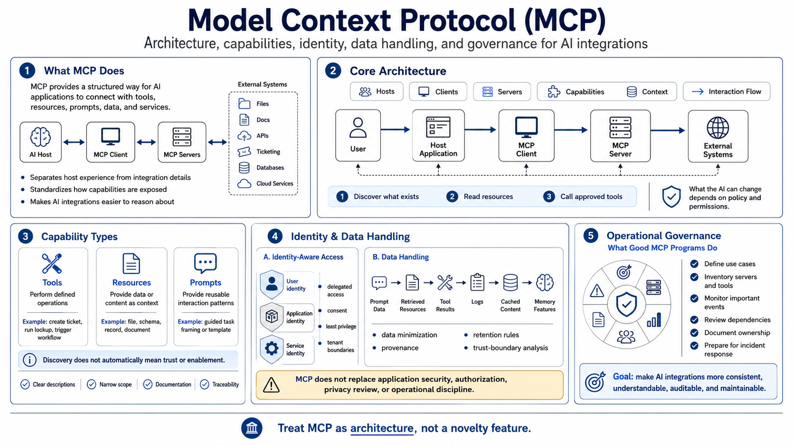

Course Summary and Key Takeaways
Connecting to LMS... Progress: in progress

Narration
MCP provides a structured way for AI applications to connect with tools, resources, prompts, data, and services. It helps separate the AI host experience from the integration details of each external system. The core architecture involves hosts, clients, servers, capabilities, context, and interaction flow. Understanding those roles makes it easier to reason about what the AI application can discover, what it can read, what it can call, and what it can change.
Tools, resources, and prompts are different capability types. Tools perform defined operations. Resources provide data or content as context. Prompts provide reusable interaction patterns. Capability discovery lets a client learn what a server offers, but discovery does not automatically mean every capability should be trusted or enabled. Clear descriptions, narrow scope, documentation, and traceability help users and operators understand how capabilities are being used.
Useful MCP adoption depends on identity-aware access and careful data handling. User identity, application identity, service identity, delegated access, consent, least privilege, and tenant boundaries all shape safe use. Prompt data, retrieved resources, tool results, logs, cached content, and memory features need data minimization, provenance, retention rules, and trust-boundary analysis. MCP does not remove the need for application security, authorization, privacy review, or operational discipline.
The goal is to make AI integrations more consistent, understandable, auditable, and maintainable. Good MCP programs define use cases, inventory servers and tools, monitor important events, review dependencies, document ownership, and prepare for incident response. MCP should make external capabilities easier to govern, not harder to see. When teams treat it as architecture rather than a novelty feature, they can adopt it with clearer control and less operational surprise.